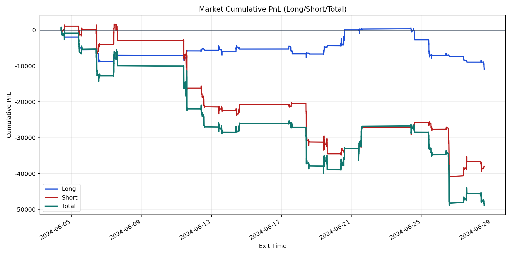
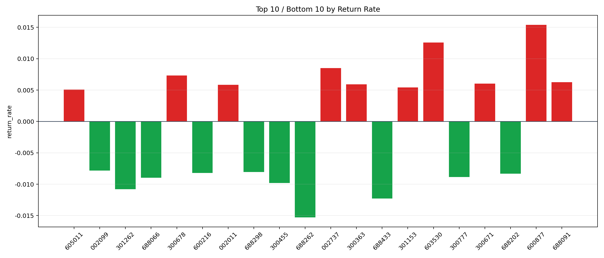

| repo_root | /home/haoranyou/data/output/alpha0.4_1w_5s_3ticks_index_filter/index_weights_1000 |
|---|---|
| period_months | 1 |
| period_label | 2024-06-04_to_2024-06-28 |
| start_time | 2024-06-04 09:50:12 |
| end_time | 2024-06-28 14:45:02 |
| n_trades | 10306 |
| n_symbols | 303 |
| total_pnl | -48859.90269999993 |
| long_total_pnl | -10789.461049999989 |
| short_total_pnl | -38070.44164999994 |
| total_entry_notional | 96218443.0 |
| long_entry_notional | 37482469.0 |
| short_entry_notional | 58735974.0 |
| total_return_rate | -0.0005078018431456009 |
| long_return_rate | -0.00028785353094002396 |
| short_return_rate | -0.0006481622599805691 |
| top_symbols_by_return | ["600877", "603530", "002737", "300678", "688091", "300671", "300363", "002011", "301153", "605011"] |
| bottom_symbols_by_return | ["688262", "688433", "301262", "300455", "688066", "300777", "688202", "600216", "688298", "002099"] |

